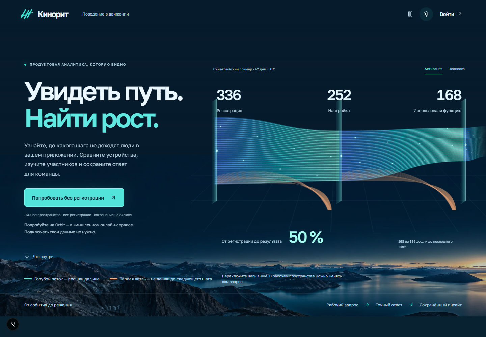

Реальный браузер · одинаковые размеры и вопросы
Ранний и финальный кадр
Ранний кадр снят на dev-сервере в начале M23, после исправления политики движения. Финальный кадр — из производственной сборки bc1147851. Статичная композиция сохранена; новые появления, интерполяцию графиков и паузу видно на записи. На мобильном анализе исправлена короткая подпись «Регистрация».
← Вернуться к записям и страницам
Код приложения совпадает с опубликованной версией e8fb05a90; изменения после сборки относятся к тестам.